本文从围棋游戏本身的复杂程度出发，先后介绍了人类学习和考虑围棋的思路，以及引用了最新的AlphaGo下围棋的原理，希望大家可以对围棋人机大战这个事情有一个更深入的了解。
本文目录:
-围棋到底是个多复杂的游戏
在最近科技圈都被人机围棋大战刷爆的时候，我突然发现自己竟然不会下围棋，好吧，这几天为了能够更深入的看懂新闻，特别的突击学习了一点点围棋的基本规则，目的不是为了快速的学会围棋，而是可以弄清楚围棋到底多复杂，以至于人工智能攻克了它是一个里程碑事件。需要弄清楚这点的话只要知道围棋的两个最基本规则就可以了：
在19*19的棋盘上双方对弈，最后在总共361个点中谁占的多谁胜。
下棋顺序是一人下一手。
那么这个游戏要想确保取胜有多复杂呢？首先我们来看一看最终结果有多少可能性？这个容易计算，361个点每个点有三种状态，要么放了黑子，要么放了白子，要么空着，那么最终棋盘的可能性就有3的361次方个，我们表示为:3^361，换算一下数量级达到了10的172次方。维基百科对于游戏的空间复杂度有
下面这张表格：
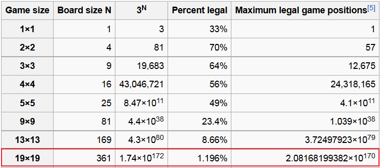
后面两列表示的是考虑到不可能每个点都能落子的情况而算的实际可能性，可以看到19*19的标准围棋的最终状态的复杂度达到了10的170次方。这是一个什么概念呢？就是假如每一个原子可以保存一种棋盘的可能性，目前已知的宇宙所有原子都远远不足以保存！这个数字展来来的话是：
208168199381979984699478633344862770286522453884530548425639456820927419612738015378525648451698519643907259916015628128546089888314427129715319317557736620397247064840935
而且~~这还只是最终结果的可能性的数量级，如果我们来考虑每一步落子需要考虑的可能性呢？维基百科根据游戏搜索树的复杂度列出了以下表格：
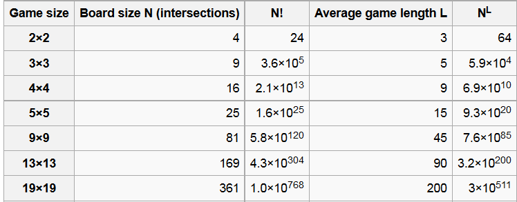
根据有关研究人员提供的数据，对于高手之间的对弈，平均每局下150手，每手平均有250种选择，即使这样围棋的搜索复杂度达到了10的360次方。这个数量级已经不是目前的计算机技术所能穷举的了！讲到这里应该可以看出：现有条件下电脑在下围棋的时候是不可能做到精确计算每一步来打败人类的。
（另外纠正上一篇文章中关于围棋是NP完全问题的误解，围棋应该是个NP困难问题，因为验证一手棋是否为最优解也是非常不容易的。）
-人类在下围棋的时候如何考虑
既然知道了围棋是这么复杂的一个游戏，那么我们人类是如何驾驭的呢？我们来看看我们人类一般在下围棋的时候是如何考虑的。我在这里先列举一些知乎上关于围棋的讨论中我认为能体现人类思维的几个回答：
围棋中心思想：
从目的来说，是围地。
从策略来说，是取舍。
从大局出发，是子效。
从局部出发，是死活。
围棋学习的过程是这样的：
经典学习过程：
学规则/基本技巧
学排兵布阵 – 定式/布局
学战斗 – 做死活题
学收官 – 学会一些概念，记住经典棋形，学会计算方法
围棋七字口诀：
1、金角银边草肚皮 盘上落子价值是：角最大（金角），边其次（银边），中腹最小。（草肚皮）
2、三线拆二有根基 三线拆二能围住一定的根据地。
3、小目飞挂应尖飞 对手小目低位来挂角，用小尖（定式）或者小飞（定式）来应对。
4、见机夹攻更有味 机会合适时，用夹的定式也很有趣味。
5、小目高挂三线托 对手如果对我小目在四线高位挂角，我可以选择在三线托它。
6、托退定式记一记 继续走就是小目高挂托退定式，应该牢牢记住这个定式。
7、星位一挂关或飞 我的星位对手来挂角，我可以用小飞或者单关定式来应对。
8、压长定式也可以 压长定式也可以选择。
9、布局关键抢要点 布局阶段要快速抢占三线四线上重要的点。
10、切莫贪吃走小棋 不要去贪吃对方几个子而走价值小的棋。
11、分投定要位置好 分投技术使用时一定要选择好位置（三线）
12、左右逢源最适宜 左右应该都可以有拆二的点才最好。
13、立二拆三搭配好 立起来的两个子，可以拆三。这个结构很好。
14、高高低低合棋理 围地时应该高（四线）和低（三线）搭配才合理
15、定要扳住两了头 碰到两个子的头，一定要扳住它。
16、逃要关来追要飞 逃跑的时候用单关；追击对方时用小飞、
17、扭十字要长一边 碰到对方扭我十字时，不要打吃，而是要长一边的子。
18、对杀定要算好气 在双方互相包围，对杀的时候，一定要仔细的计算双方的气。
19、几子将死请暂放 如果有几个子被对手围住不好跑时，可以先放着不动。
20、一旦走尽无余味 如果非要走到死，再没有利用的机会了。
21、棋精再少要保护 重要的棋子（棋精）很少也要保护。
22、轻子该弃就要弃 无关紧要的棋子可以考虑弃掉。（不要了）
23、宁失几子不失先 宁可丢掉几个棋子，但不能失去先手。（走棋的权利）
24、先刺多数占便宜 刺一下对方一般都能够占到便宜。
25、莫压四路休爬二 不要压着对方爬四路，自己不要在二路爬。
26、七子沿边活也输 爬二路就算你爬了7个子活了，但所得到的“地”太少你还是要输的。
27、要走正着走大棋 堂堂正正的走棋，要走价值大的场所。
28、不走废棋不撞气 不要走没有用的棋（废棋）不要把自己棋子的气给撞少了。
29、双单形见定靠单 碰到“单双”这样的形状，一定要靠住单子。
30、逢方必点逢镇飞 看到“方”要点一下；遇到“镇头”用飞来应对。
31、七死八活是常识 二路爬的子七个是死的；八个是活的，这是常识。
32、滚打包收是妙棋 能走出“滚打包收”的棋很漂亮。
33、连走三同四要变 连续走了三步一样的着法，第四步就要变一下。
34、左右同形中为宜 左右相同的形状走在中间一般都是要点。
35、拆逼都是宽处拦 对方三线下一个子，我拆开逼住它一般都选择走在宽的一边。
36、迫敌靠近我活棋 逼迫敌方的棋子靠近我强大的棋。
37、压强不要去压弱 压迫敌人“强”的棋子；不去碰他“弱”的棋子。
38、声东目的在击西 压迫他强的棋子是为了攻击他弱的棋子。
39、出头舒畅争中腹 双方纠缠的时候一定要把“头”走向中腹。
40、当心仅活被封棋 不能光顾着做活而被对方轻易封锁。
41、虚镇实尖灵活用 镇头，很宽松，但挡住了对方逃跑的路；小尖，步子很慢，却能阻止对方渡过。
42、棋成愚形效率低 行棋不要走愚蠢的形状，那样效率很低。
43、边攻击来边围空 通过攻击对方来达到围空的目的。（空是指用子围住的地盘）
44、自己勿活要补棋 自己的棋子被对方包围了。如果不是活棋的形状，那就要补活它。
45、能立则立曲则曲 行棋时立下来和曲（拐头）都是棋形的要点。
46、多弃一子能出棋 死的棋子，为了能更好的利用，一般都再走一步以后弃掉。
47、两二被打定要长 在底线的子被打吃的时候，就是要死，也要先长一手。
48、金鸡独立有骨气 金鸡独立是在接触战斗的时候把一个死子立在一线，反而把对方的子给吃了。
49、棋过一半要冷静 棋局进入到中盘时，要冷静的思考。
50、判断形势定大计 应该仔细的查一下双方围的地盘目数，再来决定下一步的走法。
51、若是胜势莫贪心 如果我们已经地盘很多了，处于优势，那就不要贪心再去攻击和追吃对方。
52、稳扎稳打操胜棋 应该稳扎稳打的把自己的棋走强，走好，不要出问题。
53、若是败势别灰心 局势不好，那也不要灰心丧气。
54、乘早侵袭找弱棋 要仔细寻找敌方的弱棋进行猛烈进攻。
55、刺打断托点利用刺.（破坏对方的形）打.（打吃）断.（切断）托.（碰对方）点.（点眼）
56、弃子造劫借借气 通过弃子和打劫来长气及作战。
57、挑起纠纷比智力 局势不好的时候，就要挑起纷争，搅乱局面。和敌人比拼智慧。
58、力争败局转棋细 争取扭转败局走成细棋。（细棋指双方围的目数非常接近）
59、双先官子抢着走 进入到官子阶段时，要抢先把双方先手官子走掉。（双先.术语）
60、收官需慎莫大意 计算官子的大小，先后。需要谨慎和细致，不要大意。
61、布局常形十二种 围棋的常见布局有十二种
62、中国流和二连星 中国流； 二连星；
63、对角小目一三五 对角小目；一三五；
64、星三三和双三三 星三三； 双三三；
65、同型小目错小目 相小目； 错小目；
66、宇宙流和对角星 三连星； 对角星；
67、小林流和星小目 小林流； 星小目。
68、各型特点要熟记 各种布局的特点和走法要熟悉和记牢。
69、布局掌握三原则 布局要掌握三个原则：
70、空守挂角是次序 占空角，守角，挂角是正确的次序。
71、再占急所与大场 先走急所，后走大场。
72、借势开拆是大棋 借助自己的势力大一些拆开价值很大。
73、选用定式看全局 选择定式要根据全局来决定。
74、上下左右搭配齐 上下和左右都要搭配合理。
75、自己已活可脱先 自己的一块棋已经活了，那就可以脱先去走别的地方。
76、抢占要点别犹豫 快速抢占重要的点，不要犹豫。
77、看准敌弱要搜根 攻击敌人比较弱的棋子，要搜掉它的根。
78、迫敌走成飘浮棋 迫使敌人成为没有根据地，漂浮起来的孤棋。
79、挂星被夹点三三 你挂星的时候，只要敌人夹你，就点他的三三。
80、弃子活角两有利 弃掉你的挂角之子，但你点活了角。你得到了利益。
81、弃角取势争模样 弃掉角部取得外势，
82、飞封定式要熟记 高目的小飞封定式要熟悉和记牢。
83、无忧角上两路托 对小飞无忧角进行二路的托，
84、试探应手是真意 是试探对方应手的走法。
85、敌强欲削宜浅侵 对手的阵形很强，我应该用侵削的战术来应对。
86、进退有路方为宜 进可以挡下去，退也能跳出来。这样才合适宜。
87、自己断点常记心 自己的断点一定要时刻记住，
88、适时护断别忘记 寻找机会补掉断点不要忘了。
89、先活自己再杀敌 先保护自己，然后再攻击敌人。
90、一味贪杀反被欺 如果一个劲的贪图攻杀敌方，因为自己有弱点，反而会被欺负。
91、两块活棋不必断 敌人两片棋都活了，那我就不要去切断它。
92、友邻浮子要联系 我的两片没有根据地的棋，一定要连在一起。
93、断后敌孤定要断 切断敌人后对方的子就会不活，那一定要断开。
94、该断不断勿成棋 可以断但不断就不是棋了。
95、冲断扭断反打断 断有很多手法，有冲断；扭断；反打断；
96、挖断跨断寻战机 挖断；跨断。用断来寻找作战的机会。
97、立断劫断打入断 立断；劫断；打入断。
98、围歼孤棋反眼挤 包围敌人的孤棋，破掉它的眼位。
99、莫往攻击目标碰 你想要攻击的棋，最好不要直接去碰它。
100、宽攻大围收渔利 松松的攻击；远远的包围，能得到利益。
101、逢碰必扳敢作战 对手的子来碰你的子，必须扳住它。要敢于作战。
102、有时连扳妙无比 对手反扳我的时候，如果可以连扳的话，那就是妙手。
103、开劫先要看劫材 准备开始打劫的时候，要先看一看有没有适当的劫材。
104、棋补无劫要注意 如果对方的棋补的很结实，没有劫材可以找，那要注意不要轻易开劫。
105、打两还一巧妙用 打二还一用的巧妙能帮你渡过难关。
106、当心硬腿硬出奇 当心对方立在一路和二路的硬腿，可能会是一支奇兵来袭扰你。
107、一只大眼要分清 一个大的眼位要分清楚能不能做两只眼，
108、是死是活规律记 死活的形状规律要牢记。
109、长三曲三可点杀 直三曲三是：“一点死”的形状；
110、长四曲四是活棋 直四曲四是“点不死”的活形；
111、花四五六可点杀 丁四；梅花五；葡萄六都是“一点死”。
112、方四不点也死棋 方四是“不点死”的死棋。
113、刀五一点当然死 刀把五一点就死。
114、普通板六是活棋 一般在中腹的板六都是活棋。
115、大猪嘴是扳点死 大猪嘴的形状，一板再点就死了。
116、小猪嘴是劫活棋 小猪嘴是要打劫来决定死活的。
117、盘角曲四劫尽亡 盘角曲四的形状规则是劫尽棋亡，劫可以补尽，棋就死了。
118、碰角板六看外气 角上板六的死活要看有几口外气。
119、角上板八能双活 角上扳八没有外气是双活。
120、断头曲四是死棋 断头曲四（一种有断点的曲四）是可以点死的。
121、围敌一块拟杀棋 包围住一块敌人的棋，准备要开始攻杀。
122、思考方法要牢记 杀棋的方法一定要牢记。
123、扳杀点杀扳点杀 缩小眼位杀就扳，直接破眼杀就点。扳和点有时要联合使用。
124、迫敌走成撞紧气 用扑迫使敌人撞紧气。
125、再想造劫做劫杀 也可以考虑用开劫来劫杀敌人、
126、有时双活也便宜 即使杀不死对方的棋，做出双活来也是便宜的。
127、要是条件勿成熟 杀棋的准备工作还没有做好，
128、切勿乱动等时机 先不要动手，应该等待时机。
129、三三肩冲要注意 三三定式中遭到对手肩冲时要注意，
130、已边长来敌方飞 应该向着有自己子的方向长；而向有敌方子的方向飞。
131、四四遇托需连板 星位遇到敌人来托时，我扳，对方也扳，那我一般都要连扳的。
132、弃取定要想仔细 接触时，有一些子可以弃掉，但有一些子是一定要保护的。
133、攻角须从宽处理 挂角的方向应该是在宽的一面。
134、天五山是必争地 天王山（双方形势消长要点）双方一定要争夺。
135、多子围空方胜扁 多子围地盘要围成立体型的（方空）那样要胜过平面型的（扁空）
136、两翼张开形美丽 以角部为中心，在两个边拆开（两翼张开）是好的形状。
137、小目飞挂一间夹 对小飞挂小目在一间夹时，
138、高夹低夹有分歧 高夹和低夹有不同的看法。
139、低夹飞压多两分 低夹时，对方飞压，走下去一般时候都是两分（互不吃亏）的结果。
140、高夹关或反向飞 高夹时，对方单关起来，或者向着夹的方向斜飞起来。
141、压退定式虽可走 对于低夹可以压它再退回来，
142、抱吃一子稍不利 如对手让我抱吃一子，它稍微不利。
143、也可托角求安定 如果遇到夹攻时，我要想直接生根安定可以托角活棋
144、略有委曲还可以 虽然有一些委屈，但不算吃亏。
145、小目高挂二间夹 对小目高挂，对方二间高夹。
146、巧用妖刀很严厉 就可能形成难解的妖刀定式。
147、对付妖刀有六法 对妖刀定式有六种应对方法，
148、最为常见是大飞 最常见的是大飞走法；
149、大跳小跳是正着 还有大跳和小跳也都是正着。
150、一般不宜用小飞 一般使用小飞走法的不多，
151、外侧靠是可以走 外靠的走法也可以考虑。
152、内侧靠是小不利 在内侧托靠稍有不利。
153、方朔偷桃一路尖 常型‘方朔偷桃’走在一路的小尖，
154、塞不进是最惹气 对方由于气紧不能挡，很憋气。
155、龟不出头要挖打 常型‘龟不出头’关键要挖进去，
156、巧妙利用接不归 利用紧气造成接不归很巧妙。
157、勿打有变及时打 对方有断点，不打就可能产生变化，还是先打一下。
158、两打勿打等时机 两个断点就不要打，等待时机再决定打在哪里。
159、切莫凑着帮围空 对方要围空，你不要去冲它，正好帮助对方把空封住了。
160、切莫凑着帮补棋 对方棋形有缺陷，你不要盲目去走，帮助人家把毛病补好了。
161、小目高挂选定式 小目遇到高挂时要选择有利的定式。
162、低夹外靠托退飞 一间低夹.外靠.托退.小飞都可以选择。
163、雪崩内拐外里外 还有大雪崩定式，其中有内拐；外拐，先里后外等变化。
164、镇消无忧是好棋 对敌方的无忧角用‘镇’来侵消是好棋。
165、虎口遇扳常单退 虎口遇到对方扳起来时，常常冷静的退一手。
166、虎口遇打常滚打 虎口遇到对方打吃的时候，一般都应该弃子反打再滚打。
167、虎口切断常虚跳 虎口能被对手切断时也要虚跳一下，准备勒吃滚打。
168、仙鹤伸腿能联系 一路上使用‘仙鹤大伸腿’能起到联络的作用。
169、棋向中腹争阳面 把自己的子走向中腹时最好要争取直线单关跳。
170、两番收腹成效低 用两块厚棋来围中腹的‘空’效率很低。
171、下子要避车后压 对手在前面长，你贴在后面跟着走，叫推车，要避免。
172、棋高一路力无比 你的棋子高出对方一头，作战时会发挥很大的力量。
173、棋逢难处小尖尖 碰到围追堵截困难时，走小尖逃跑不易被切断。
174、不好走处不走棋 一些棋子不好处理的时候，可以先放着不动。
175、敌之要点我要占 敌人的重要点位，我也要抢占。
176、常替敌棋多考虑 经常要算到敌人要做什么？
177、敌棋知舞避其锋 （原文有误）敌人很强的时候，我应该避开作战。
178、我补厚实敌变弱 我把自己的棋补厚，敌人就变弱了。
179、穿过象眼要注意 穿象眼一定要谨慎。
180、穿忌两行飞为宜 敌人穿我象眼，我不要贴着它走。而是应该用小飞来‘松走’。
181、三路挖出先看征 打入被对方盖住头，要走挖的时候先看一下征子是否有利。
182、两子必长别忘记 两子头不能被对方扳，所以一定要记住必须长出去。
183、三路腾挪常碰撞 使用腾挪来破坏对方地盘时，经常是碰它三路的子。
184、弃子发威能得利 接触战斗的时候，弃掉一些子，可已得到更大的利益。
185、围棋四角顶有趣 棋盘上的四个角。有很多有趣的走法。
186、生生死死变化奇 死活的变化很多，令人称奇。
187、拨钉子里有称砣 有大头鬼的走法，它的别名叫拔钉子和秤砣。
188、老鼠偷油真有趣 老鼠偷油的形状趣味横生。
189、棋逢断处巧能生 寻找对方的断点巧妙的生出事来。
190、下子先后讲次序 行棋的先后次序一定要走好。
191、两壹路上多妙手 二.一路（魔术点）经常发生死活的妙手。
192、托夹扑劫尖挖聚 接触战时的手法有托.夹.扑.劫.尖.挖.聚（团成一定的形状）。
193、防闷成形宜单跳 防止对方关门吃我的时候，最好用单跳。
194、两子成形斜飞利 并着的两个子要想走成好形，最好用斜飞。
195、四路被断常虚跳 我四路的一个子被断开了，最好用虚跳。
196、一团气促鼻顶宜 对方的子走成了一团，找到突出的子（鼻子）顶住它。
197、台象生根点胜托 台象（棋形的名字）想要原地生根，点入对方的二路比托要好。
198、矩形护断虎输飞 矩形（拐尺的形状）保护断点用虎不如用飞（小飞）。
199、不能用征可半枷 对征不掉的子可以用枷或变形枷来吃它。
200、送佛归殿送到底 还可以用送佛归殿（软征）追击它到底线。
内容有点多，我简单总结一下，我们人类学习围棋和下围棋的时候，由于无法做到穷尽所有可能性，所以我觉得我们讲究的就一个字“悟”，有的人聪明，天生就有很好的悟性，而更多的人则是随着经验的增加，悟性一点一点增加。下棋的时候我们局部上会有一些简单的计算，聪明的人或许比普通的人能多计算几手之后的棋形，在大局上我们更多的讲究的是一种感觉。而这些东西人工智能如何能体现出来呢？我们接着往下看。
-人工智能如何下围棋
本来想自己一点一点写的，但是发现有一篇文章已经非常通俗易懂的解释了AlphaGo是如何下围棋的，在这里引用过来大家一起了解一下。
原文出自：https://www.zhihu.com/question/39905662
袁行远，彩云天气CEO的回答：左右互搏，青出于蓝而胜于蓝？
围棋棋盘是19x19路，所以一共是361个交叉点，每个交叉点有三种状态，可以用1表示黑子，-1表示白字，0表示无子，考虑到每个位置还可能有落子的时间、这个位置的气等其他信息，我们可以用一个361 * n维的向量来表示一个棋盘的状态。我们把一个棋盘状态向量记为s。当状态s下，我们暂时不考虑无法落子的地方，可供下一步落子的空间也是361个。我们把下一步的落子的行动也用361维的向量来表示，记为a。这样，设计一个围棋人工智能的程序，就转换成为了，任意给定一个s状态，寻找最好的应对策略a，让你的程序按照这个策略走，最后获得棋盘上最大的地盘。
如果你想要设计一个特别牛逼惊世骇俗的围棋程序，你会从哪里开始呢？对于在谷歌DeepMind工作的黄世杰和他的小伙伴而言，第一招是：
“深度卷积神经网络”
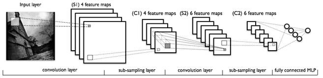
深度卷积神经网络早在98年就攻克了手写数字识别，近些年在人脸识别、图像分类、天气预报等领域无往而不利，接连达到或超过人类的水平，是深度学习火遍大江南北的急先锋。我们现在看到的Picasa照片自动分类，Facebook照片识别好友，以及彩云天气高精度天气预报（软广出现，不要打我）都是此技术的应用。这等天赐宝物，如果可以用来下围棋，岂不是狂拽酷炫吊炸天？所以2015年黄世杰发表在ICLR的论文[3]一上来就使出了“深度神经网络”的杀招，从网上的围棋对战平台KGS（外国的qq游戏大厅）可以获得人类选手的围棋对弈的棋局。观察这些棋局，每一个状态s，都会有一个人类做出的落子a，这不是天然的训练样本
手的落子结果a，不就得到了一个模拟人类棋手下围棋的神经网络了吗？
于是我们得到了一个可以模拟人类棋手的策略函数P_human，给定某个棋局状态s，它可以计算出人类选手可能在棋盘上落子的概率分布a = P_human(s)，如下图：
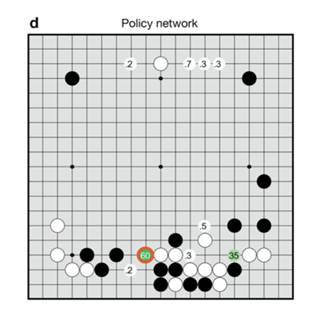
红圈就是P_human觉得最好的落子方案。每一步都选择概率最高的落子，对方对子后再重新计算一遍，如此往复就可以得到一个棋风类似人类的围棋程序。
这个基于“狂拽酷炫”深度学习的方案棋力如何呢？
不咋地。黄世杰说P_human已经可以和业余6段左右的人类选手过招，互有胜负，但还未能超过当时最强的电脑程序CrazyStone，距离人类顶尖玩家就差得更远了。
所以，为求更进一步，黄世杰打算把P_human和CrazyStone的算法结合一下，师夷长技以制夷，先击败所有的其他围棋AI再说。
等等，CrazyStone的算法[1,5]是什么？
哦，那个算法是黄世杰的老师Remi Coulum在2006年对围棋AI做出的另一个重大突破：
“MCTS，蒙特卡洛搜索树”
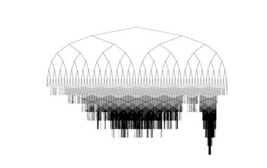
蒙特卡洛搜索树（Monte-Carlo Tree Search）是一种“大智若愚”的方法。面对一个空白棋盘S0，黄世杰的老师Coulum最初对围棋一无所知，便假设所有落子方法分值都相等，设为1。然后扔了一个骰子，从361种落子方法中随机选择一个走法a0。Coulum想象自己落子之后，棋盘状态变成S1，然后继续假设对手也和自己一样二逼，对方也扔了一个筛子，随便瞎走了一步，这时棋盘状态变成S2，于是这两个二逼青年一直扔骰子下棋，一路走到Sn，最后肯定也能分出一个胜负r，赢了就r记为1，输了则为0，假设这第一次r=1。这样Coulum便算是在心中模拟了完整的一盘围棋。
Coulum心想，这样随机扔骰子也能赢？运气不错啊，那把刚才那个落子方法（S0,a0）记下来，分值提高一些：
新分数= 初始分+ r
我刚才从（S0, a0）开始模拟赢了一次，r=1，那么新分数=2，除了第一步，后面几步运气也不错，那我把这些随机出的局面所对应落子方法(Si,ai)的分数都设为2吧。然后Coulum开始做第二次模拟，这次扔骰子的时候Coulum对围棋已经不是一无所知了，但也知道的不是太多，所以这次除（S0, a0）的分值是2之外，其他落子方法的分数还是1。再次选择a0的概率要比其他方法高一点点。那位假想中的二逼对手也用同样的方法更新了自己的新分数，他会选择一个a1作为应对。如法炮制，Coulum又和想象中的对手又下了一盘稍微不那么二逼的棋，结果他又赢了，Coulum于是继续调整他的模拟路径上相应的分数，把它们都+1。随着想象中的棋局下得越来越多，那些看起来不错的落子方案的分数就会越来越高，而这些落子方案越是有前途，就会被更多的选中进行推演，于是最有“前途”的落子方法就会“涌现”出来。
最后，Coulum在想象中下完10万盘棋之后，选择他推演过次数最多的那个方案落子，而这时，Coulum才真正下了第一步棋。
蒙特卡洛搜索树华丽转身为相当深刻的方法，可以看到它有两个很有意思的特点：
1）没有任何人工的feature，完全依靠规则本身，通过不断想象自对弈来提高能力。这和深蓝战胜卡斯帕罗夫完全不同，深蓝包含了很多人工设计的规则。 MCTS靠的是一种类似遗传算法的自我进化，让靠谱的方法自我涌现出来。让我想起了卡尔文在《大脑如何思维》中说的思维的达尔文主义。
2）MCTS可以连续运行，在对手思考对策的同时自己也可以思考对策。Coulum下完第一步之后，完全不必要停下，可以继续进行想象中的对弈，直到对手落子。Coulum随后从对手落子之后的状态开始计算，但是之前的想象中的对弈完全可以保留，因为对手的落子完全可能出现在之前想象中的对弈中，所以之前的计算是有用的。这就像人在进行对弈的时候，可以不断思考，不会因为等待对手行动而中断。这一点Coulum的程序非常像人，酷毙了。
但黄世杰很快意识到他老师的程序仍然有局限：初始策略太简单。我们需要更高效地扔骰子。
如何更高效的扔骰子呢？
用P_human()来扔。
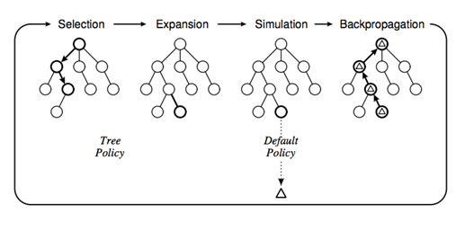
黄世杰改进了MCTS，一上来不再是二逼青年随机掷骰子，而是先根据P_human的计算结果来得到a可能的概率分布，以这个概率来挑选下一步的动作。一次棋局下完之后，新分数按照如下方式更新：
新分数= 调整后的初始分+ 通过模拟得到的赢棋概率
如果某一步被随机到很多次，就应该主要依据模拟得到的概率而非P_human所以P_human的初始分会被打个折扣：
调整后的初始分= P_human/（被随机到的次数+ 1）
这样就既可以用P_human快速定位比较好的落子方案，又给了其他位置一定的概率。看起来很美，然后实际操作中却发现：“然并卵”。因为，P_human()计算太慢了。
一次P_human()计算需要0.3ms，相对于原来随机扔骰子不到1us，慢了3000倍。如果不能快速模拟对局，就找不到妙招，棋力就不能提高。所以，黄世杰训练了一个简化版的P_human_fast()，把神经网络层数、输入特征都减少，耗时下降到了2us，基本满足了要求。先以P_human()来开局，走前面大概20多步，后面再使用P_human_fast()快速走到最后。兼顾了准确度和效率。
这样便综合了深度神经网络和MCTS两种方案，此时黄世杰的围棋程序已经可以战胜所有其他电脑，虽然距离人类职业选手仍有不小的差距，但他在2015年那篇论文的最后部分信心满满的表示：“我们围棋软件所使用的神经网络和蒙特卡洛方法都可以随着训练集的增长和计算力的加强（比如增加CPU数）而同步增强，我们正前进在正确的道路上。”
看样子，下一步的突破很快就将到来。同年2月，黄世杰在Deepmind的同事在顶级学术期刊nature上发表了“用神经网络打游戏”的文章[2]。这篇神作，为进一步提高MCTS的棋力，指明了前进的新方向：
“左右互搏，自我进化”
红白机很多人小时候都玩过，你能都打通吗？黄世杰的同事通过“强化学习”方法训练的程序在类似红白机的游戏机上打通了200多个游戏，大多数得分都比人类还好。
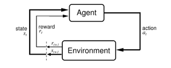
“强化学习”是一类机器学习方法，Agent通过和环境s的交互，选择下一步的动作a，这个动作会影响环境s，给Agent一个reward，Agent然后继续和环境交互。游戏结束的时候，Agent得到一个最后总分r。这时我们把之前的环境状态s、动作a匹配起来就得到了一系列
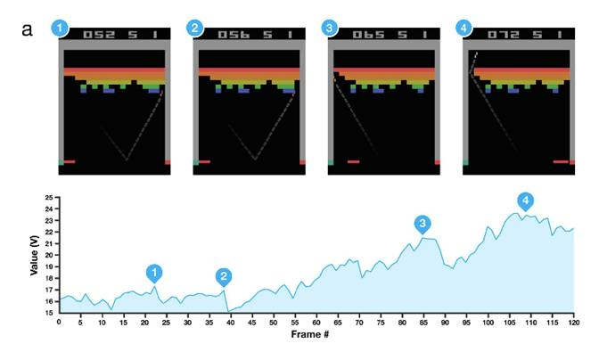
黄世杰考虑给围棋也设计一个评价函数v(s)，在P_human()想象自己开局走了20多步之后，不需要搜索到底，如果有一个v(s)可以直接判断是否能赢，得到最后的结果r，这样肯定能进一步增加MCTS的威力。
黄世杰已经有了国外的qq游戏大厅KGS上的对局，但是很遗憾这些对局数量不够，不足以得到局面评价函数v。但是没关系，我们还可以左右互搏自对弈创造新的对局。
机器学习的开山鼻祖Samuel早在1967年就用自对弈的方法来学习国际跳棋[7]，而之前的蒙特卡洛搜索树也是一个自对弈的过程。但是现在黄世杰不仅有一个从人类对弈中学习出的P_human这样一个高起点，而且有一个神经网络可以从对弈样本中学习，有理由相信这次会有更好的结果。
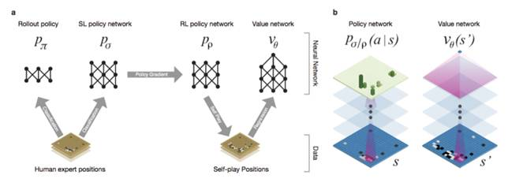
先用P_human和P_human对弈，比如1万局，就得到了一万个新棋谱，加入到训练集当中，训练出P_human_1。然后再让P_human_1和P_human_1对局，得到另外一万个新棋谱，这样可以训练出P_human_2，如此往复，可以得到P_human_n。P_human_n得到了最多的训练，棋力理应比原来更强。我们给最后这个策略起一个新名字：P_human_plus。这时，再让P_human_plus和P_human对局，在不用任何搜索的情况下胜率可达80%，不加任何搜索策略的P_human_plus和开源的MCTS相比也有85%的胜率。自对弈方法奏效了。
既然P_human_plus这么强，我们先代入到MCTS中试试，用P_human_plus来开局，剩下的用P_human_fast。可惜，这样的方法棋力反而不如用P_human。黄世杰认为是因为P_human_plus走棋的路数太集中，而MCTS需要发散出更多的选择才好。看来，P_human_plus练功还是太死板，还没有进入无招胜有招的境界。
没关系，黄世杰还有局面评价函数v(s)这一招，有了v(s)，如果我可以一眼就看到“黑棋大势已去”，我就不用MCTS在想象中自我对弈了。但考虑到P_human_plus的招法太过集中，黄世杰在训练v()的时候，开局还是先用P_human走L步，这样有利于生成更多局面。黄世杰觉得局面还不够多样化，为了进一步扩大搜索空间，在L+1步的时候，干脆完全随机掷一次骰子，记下这个状态SL+1，然后后面再用P_human_plus来对弈，直到结束获得结果r。如此不断对弈，由于L也是一个随机数，我们就得到了开局、中盘、官子不同阶段的很多局面s，和这些局面对应的结果r。有了这些训练样本
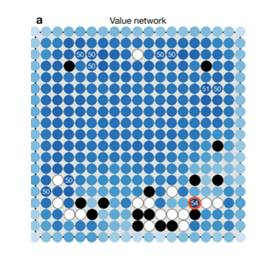
v()可以给出下一步落子在棋盘上任意位置之后，如果双方都使用P_human_plus来走棋，我方赢棋的概率。如果训练v()的时候全部都使用P_human不用P_human_plus呢？实验表明基于P_human_plus训练的v，比基于P_human训练的v’，棋力更强。强化学习确实有效。
万事俱备，只欠东风。准备好P_human()，MCTS，以及评价函数v()，黄世杰和小伙伴们继续进击，向着可以和人类专业选手过招的围棋AI前进：
“阿尔法狗”
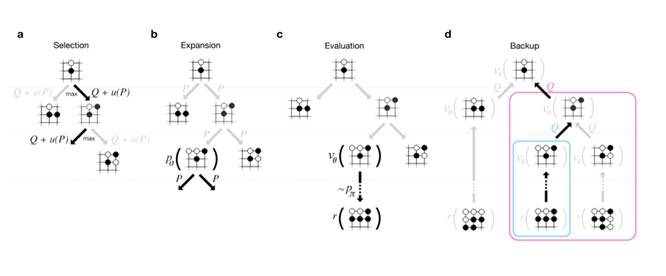
黄世杰准备在MCTS框架之上融合局面评估函数v()。这次还是用P_human作为初始分开局，每局选择分数最高的方案落子，下到第L步之后，改用P_human_fast把剩下的棋局走完，同时调用v(SL)，评估局面的获胜概率。然后按照如下规则更新整个树的分数：
新分数= 调整后的初始分+ 0.5 通过模拟得到的赢棋概率 + 0.5 局面评估分
前两项和原来一样，如果待更新的节点就是叶子节点，那局面评估分就是v(SL)。如果是待更新的节点是上级节点，局面评估分是该节点所有叶子节点v()的平均值。
如果v()表示大局观，“P_human_fast模拟对局”表示快速验算，那么上面的方法就是大局观和快速模拟验算并重。如果你不服，非要做一个0.5: 0.5之外的权重，黄世杰团队已经实验了目前的程序对阵其他权重有95%的胜率。
以上，便是阿尔法狗的庐山真面目。
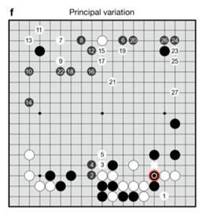
上图演示了阿尔法狗和樊麾对弈时的计算过程，阿尔法狗执黑，红圈是阿尔法狗实际落子的地方。1、2、3和后面的数字表示他想象中的之后双方下一步落子的地方。白色方框是樊麾的实际落子。在复盘时，樊麾觉得位置1的走法更好。
深度学习、蒙特卡洛搜索树，自我进化三招齐出，所有其他围棋ai都毫无还手之力。99%的胜率不说，“阿尔法狗”还可以在让四子的情况下以77%的胜率击败crazystone。“阿尔法狗”利用超过170个GPU，粗略估算超过800万核并行计算，不仅有前期训练过程中模仿人类，自我对弈不断进化，还有实战时的模拟对局可以实时进化，已经把现有方法发挥到了极限，是目前人工智能领域绝对的巅峰之作。
-结尾
昨天刚看到最新的说法是人工智能攻克围棋不算什么，哪一天看到人工智能可以写小说了，那才是真正意义的智能。虽然说AlphaGo以4：1战胜李世石是人工智能界的一个重大事件，但是想要达到人类这种程序的智能，现有的技术还有很长的路要走。伴随着这一波(人工智能的发展到目前一共经历了三波)人工智能的迅速发展，关于奇点来临的讨论也日趋激烈，下一篇文章将聊一聊奇点来临这点事。
“奇点”是指人类与其他物种（物体）的相互融合。确切来说，是指电脑智能与人脑智能兼容的那个神妙时刻。